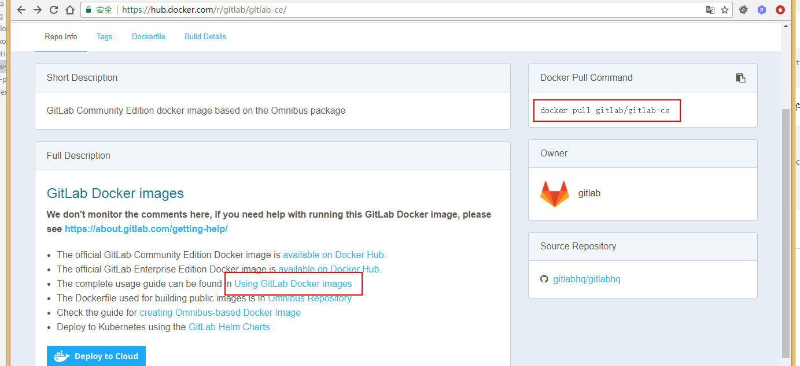

新建社区版gitlab
搭建社区版gitlab
gitlab 安装下载地址:https://hub.docker.com/r/gitlab/gitlab-ce/
前提：安装docker，
参考 https://blog.csdn.net/chengyuqiang/article/details/78886986
修改yum镜像源
下载安装速度可能会慢:修改CentOS默认yum源为国内yum镜像源 参考 https://blog.csdn.net/inslow/article/details/54177191
修改CentOS默认yum源为mirrors.aliyun.com
1、首先备份系统自带yum源配置文件/etc/yum.repos.d/CentOS-Base.repo1
[root@localhost ~]# mv /etc/yum.repos.d/CentOS-Base.repo /etc/yum.repos.d/CentOS-Base.repo.backup
2、进入yum源配置文件所在的文件夹1
[root@localhost ~]# cd /etc/yum.repos.d/
3、下载ailiyun的yum源配置文件到/etc/yum.repos.d/
CentOS71
[root@localhost ~]# wget -O /etc/yum.repos.d/CentOS-Base.repo http://mirrors.aliyun.com/repo/Centos-7.repo
4、新增docker镜像源
在/etc/yum.repos.d/CentOS-Base.repo 文件新增下面命令
1 | [dockerrepo] |
安装docker
1、搜索docker1
yum search docker
2、安装docker1
yum install -y docker
3、启动Docker1
systemctl start docker
4、查看状态1
systemctl status docker
安装gitlab
访问地址:https://hub.docker.com/r/gitlab/gitlab-ce/

下载
安装
点击Using GitLab Docker images 跳转到 安装页面,执行下面命令1
2
3
4
5
6
7
8
9sudo docker run --detach \
--hostname gitlab.example.com \
--publish 443:443 --publish 80:80 --publish 22:22 \
--name gitlab \
--restart always \
--volume /srv/gitlab/config:/etc/gitlab \
--volume /srv/gitlab/logs:/var/log/gitlab \
--volume /srv/gitlab/data:/var/opt/gitlab \
gitlab/gitlab-ce:latest
注意:hostname ,可修改为本地ip地址，端口号也可以修改，比如下
1 | sudo docker run --detach \ |
基本命令操作
停止gitlab
删除gitlab
更新最新的gitlab
创建gitlab
2
3
4
5
6
7
8
9
--hostname gitlab.example.com \
--publish 443:443 --publish 80:80 --publish 22:22 \
--name gitlab \
--restart always \
--volume /srv/gitlab/config:/etc/gitlab \
--volume /srv/gitlab/logs:/var/log/gitlab \
--volume /srv/gitlab/data:/var/opt/gitlab \
gitlab/gitlab-ce:latest
坚持原创技术分享，您的支持是我前进的动力！